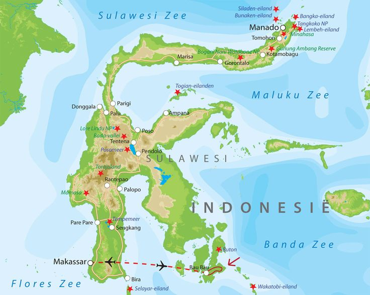
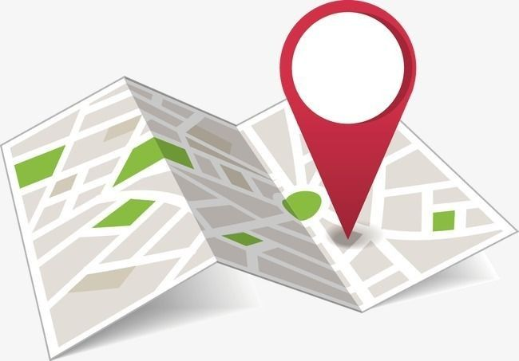

Produk
Produk yang dihasilkan adalah interactive map yang memvisualisasikan deformasi pergeseran horizontal, pergeseran vertikal, regangan dilatasi, dan regangan maximum shear.
Cuplikan Peta
Akses Peta Lengkap
Lihat Peta InteraktifManual Guide

Manual Guide adalah panduan atau petunjuk yang menyediakan informasi detail mengenai cara menggunakan fitur atau aplikasi tertentu. Tujuannya adalah untuk memudahkan pengguna dalam memahami dan mengoperasikan produk atau layanan dengan benar.

Pengguna dapat menyesuailkan layer yang ingin ditampilkan pada peta dengan mengaktifkan dan mematikan layer yang ditandai oleh ceklis dan non ceklis pada bagian kotak nama layer. Ceklis menunjukan layer ditampilkan pada peta sedangkan non ceklis menunjukan layer tidak ditampilkan pada peta. Ketika layer ditampilkan pada peta maka akan diikutsertakan informasi legenda yang menyertai layer tersebut.

Fitur sidebar collapse dan expand berfungsi untuk memberikan
fleksibilitas dalam menampilkan menu atau navigasi samping. Sidebar ini bisa dikecilkan (collapse)
atau diperluas (expand) sesuai kebutuhan pengguna. Ketika sidebar collapse, tampilannya menjadi lebih ringkas,
hanya menyisakan ikon atau garis tipis yang menyiratkan fungsi menu.
Sebaliknya, ketika expand, sidebar kembali ke bentuk penuh dengan menampilkan semua elemen menu atau teks navigasi
yang tersedia. Fitur ini biasanya digunakan untuk memudahkan pengguna dalam mengakses menu ketika diperlukan, lalu
menyembunyikannya kembali agar tidak mengganggu tampilan

Slidebar digunakan untuk mengetahui perbedaan data deformasi selama 3 tahun berturut-turut yang dimulai dari tahun 2016 - 2018. Ketika memilih salah satu tahun pada slide bar maka akan menunjukan tampilan visualisasi deformasi pada tahun yang pengguna inginkan.

Pengguna dapat memilih basemap sesuai keinginan pengguna dengan mengklik salah satu basemap yang disediakan pada peta. Ketiga model basemap menampilkan tampilan yang berbeda dan dengan karakteristik yang berbeda yang disesuaikan dengan tujuan pengguna.

Pengguna dapat mengetahui informasi ataupun attribut dari data visualisasi deformasi yang disajikan ketika pengguna memilih salah satu layer titik CORS. Ketika memilih titik CORS berwarna hijau maka akan terdapat informasi detail terkait dengan deformasi yang terjadi pada titik CORS tersebut, namun untuk titik CORS berwarna putih tidak terdapat informasi detail seperti titik CORS berwarna hijau.

Latar Belakang
-
Pulau Sulawesi
Pulau Sulawesi, dengan bentuknya yang unik menyerupai huruf "K," merupakan salah satu wilayah geografi yang sangat menarik untuk dianalisis secara spasial. Pulau ini terletak di kawasan Wallacea, zona transisi antara lempeng tektonik Eurasia, Indo-Australia, dan Pasifik, menjadikannya daerah dengan aktivitas tektonik yang signifikan.
-

Kondisi Geologis Pulau Sulawesi
Kondisi geologis Pulau Sulawesi menciptakan pola deformasi tanah yang kompleks, seperti pergeseran lempeng dan patahan aktif, yang memengaruhi lanskap fisik serta dinamika lingkungan Sulawesi. Dengan beragam ekosistem mulai dari pegunungan tinggi hingga pesisir berbatu, Sulawesi menawarkan tantangan dan peluang untuk memahami bagaimana perubahan spasial dan temporal memengaruhi struktur geografis dan kehidupan masyarakat di sekitarnya.
-

Aspek Spasial Sulawesi
Aspek spasial Sulawesi juga berkaitan erat dengan persebaran populasi, pola penggunaan lahan, dan keberadaan infrastruktur penting seperti jalur transportasi dan pusat permukiman. Pemanfaatan teknologi Web GIS memungkinkan analisis deformasi secara komprehensif, tidak hanya untuk memetakan pergeseran daratan tetapi juga untuk mengidentifikasi risiko bencana seperti gempa bumi dan likuefaksi.
-

Integrasi Data
Integrasi data spasial dengan dimensi temporal membantu para peneliti dan pengambil kebijakan memahami perubahan jangka panjang di Sulawesi, mendukung perencanaan tata ruang yang berkelanjutan, serta mitigasi risiko yang lebih baik di wilayah ini. Dengan pendekatan berbasis Web GIS, Sulawesi menjadi contoh ideal bagaimana teknologi dapat digunakan untuk mengelola tantangan geografi yang kompleks secara ilmiah dan praktis.
-
OUR TEAM
Dedi Atunggal SP, S.T., M.Sc.
Dosen Pembimbing
NIP. 197912142005011003
Sayyida Amalia Zahra
Mahasiswa
NIM. 21/473489/TK/52186
Salzabila Enzal Putri
Mahasiswa
NIM. 21/475426/TK/52482
Lintang Restu Fatikhah
Mahasiswa
NIM. 21/478359/TK/52715
Nur Intan Komala Dewi
Mahasiswa
NIM. 21/480077/TK/52972
Devanta Kadeswara
Mahasiswa
NIM. 21/481367/TK/53131
Department of Geodetic Engineering
Faculty of Geodetic Engineering Universitas Gadjah Mada
Jl. Grafika no.2 Bulaksumur, Yogyakarta, 55281